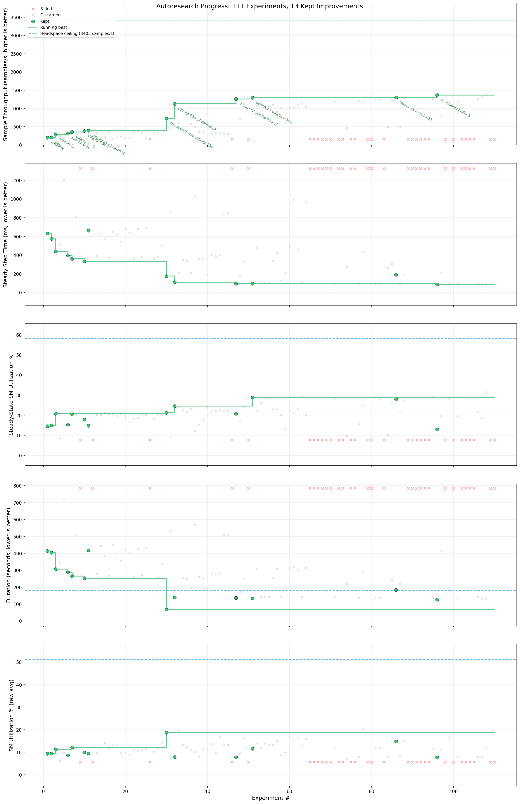

Example: Video Classification (MTP + Concurrency Tuning)¶
This page describes the second autoresearch run on the video classification example pipeline. The first run (Example: Video Classification) discovered GPU NVDEC decode, split demux/decode, and subclip windowing — reducing step time from 426ms to 153ms (2.78×). This run starts from that optimized baseline and pushes further by introducing subprocess isolation (MTP) and concurrency tuning, achieving a 7.0× throughput improvement over the new baseline.
Setup¶
Starting point: The pipeline from the first autoresearch run, which uses GPU NVDEC decode with a split demux/decode architecture, subclip 2s windowing, dedicated thread executors, and bf16 autocast.
Pipeline:
Sampling → fetch (c=8) → disaggregate → demux (c=8) → NvdecDecode (c=16) → aggregate → collate
Hardware: 1×8 H100 GPUs (grandteton).
Engine configuration:
spdl autoresearch engine \
--workflow spdl.autoresearch.pipeline_optimization:create_workflow \
--workdir /data/users/moto/autoresearch/video_classification_opt_v5 \
--max-concurrency 3 --platform auto \
-- \
--pipeline-script video_classification.py \
--source-dir spdl/examples/video_classification \
--build-command '...' \
--base-launch-command 'torchx run ...' \
--max-iterations 20 --patience 5 --job-timeout 600
The engine ran with up to 3 concurrent experiments and a 10-minute timeout per job.
Baseline¶
The starting pipeline produced 195 samples/s (3,120 fps) with 14.7% steady-state GPU SM utilization. The headspace analysis (CacheDataLoader) measured a compute floor of 37.6ms/step — 94% of step time was spent waiting for data.
Unlike the first run, MTP (subprocess pipeline) succeeded this time because
packet serialization support was added to SPDL, enabling demuxed
VideoPackets to be pickled across the process boundary. The MTP seed
experiment provided a modest +4% improvement (202.8 sps) by isolating CPU
data loading threads from CUDA kernel scheduling.
Results¶
The best configuration (gc_disabled_buffer_5) achieved 1,368 samples/s
(21,890 fps), a 7.0× improvement from the baseline of 195 sps (3,120 fps).
The optimized pipeline is available in the repository at commit fa5e934.
Optimization |
Throughput |
Step Time |
Cumulative Improvement |
|---|---|---|---|
Baseline (single process, demux c=8, NVDEC c=16) |
195 sps |
632ms |
— |
+ MTP subprocess isolation |
203 sps |
573ms |
↑4% |
+ Subclip 0.5s (from 2.0s) |
317 sps |
395ms |
↑63% |
+ NVDEC concurrency 7 (from 16) |
353 sps |
360ms |
↑81% |
+ Subclip 0.5s + NVDEC c=7 combined |
386 sps |
332ms |
↑98% |
+ Demux concurrency 4 (from 8) |
1,126 sps |
113ms |
↑478% |
+ Demux concurrency 3 |
1,294 sps |
93ms |
↑564% |
+ GC disabled + frontend buffer=5 |
1,368 sps |
85ms |
↑601% |
Key Discoveries¶
What worked¶
Reducing demux concurrency from 8 to 3 — The single biggest lever and the most counter-intuitive finding. Demuxing was assumed to be a near-trivial operation (milliseconds per item vs hundreds of milliseconds for decoding), so its concurrency seemed unimportant. In reality, demux threads contend severely at modest concurrency levels, and per-item latency rises sharply:
Note
A follow-up investigation traced the bottleneck to FFmpeg’s
codec_mutex— a process-wide lock in libavcodec/avcodec.c that serializescodec->init()for any decoder flaggedFF_CODEC_CAP_NOT_INIT_THREADSAFE(applied to codecs backed by external libraries whose thread-safety status is unknown to FFmpeg). EveryDemuxerconstruction callsavformat_find_stream_info, which internally opens decoders to probe stream parameters, hitting this lock once per stream.Demux Contention Curve¶ Concurrency
Per-item Latency (p50)
Throughput
c=2
~0.010s
1,261 sps
c=3
0.013s
1,294 sps
c=4
0.023s
1,126 sps
c=6
0.067s
580 sps
c=8 (default)
0.150s
386 sps
Going from c=8 to c=3 reduced per-item demux latency by 11.5× (0.150s → 0.013s). The agent mapped this curve methodically and pinpointed c=3 as the sweet spot.
Shorter subclip duration (0.5s vs 2.0s) — The first run found 2.0s optimal. With MTP subprocess isolation and the improved pipeline architecture, 0.5s became viable — the demux seeking overhead that penalized short clips in the first run was eliminated by running demux in a separate process.
MTP subprocess isolation — Running demux in a subprocess via
spdl.pipeline.run_pipeline_in_subprocessisolates CPU-intensive FFmpeg container parsing from CUDA kernel launch scheduling. This required packet serialization support (pickle forVideoPackets).GC management — Disabling automatic garbage collection during training steps and running
gc.collect()between epochs eliminated periodic latency spikes (~30ms every 50 steps).Frontend buffer size — Increasing the frontend sink buffer from 3 to 5 smoothed NVDEC timing jitter, providing a marginal but consistent improvement.
What did not work¶
Increasing demux concurrency (c=12, c=16) — Every experiment with higher demux concurrency was worse than baseline. The intuition “more threads = more throughput” pointed in the wrong direction for this memory-bandwidth-bound stage.
Larger batch sizes (alone) — Batch=32 without other optimizations only yielded +5%. However, batch=32 combined with the full MTP + concurrency tuning stack was competitive (1,301 sps).
CPU decode — CPU-based FFmpeg decode with demux c=4 reached ~1,060 sps — competitive but ~20% below NVDEC configurations.
torch.compile — Added compilation warmup with no steady-state improvement. The model (R3D-18 at 112×112) is too compute-light for compilation to matter.
Streaming demux — Both streaming demux variants crashed or stalled.
Priority executor — Provided no improvement over standard ThreadPoolExecutor configurations.
Pipeline Architecture: Before and After¶
Before (single process, 195 sps):
pipeline = (
PipelineBuilder()
.add_source(source, continuous=True)
.pipe(dataset.__getitem__, concurrency=8, executor=fetch_executor)
.disaggregate()
.pipe(Demux(...), concurrency=8, executor=demux_executor)
.pipe(nvdec_decode, concurrency=16, executor=decode_executor)
.aggregate(batch_size, drop_last=True)
.pipe(collate)
.add_sink(buffer_size=3)
.build(num_threads=2)
)
After (MTP subprocess split, 1,368 sps):
# Backend (subprocess) — CPU-only: fetch → disaggregate → demux
backend = (
PipelineBuilder()
.add_source(source, continuous=True)
.pipe(partial(_fetch_sample, dataset=dataset), concurrency=num_fetch_threads)
.disaggregate()
.pipe(
partial(_demux_sample, label_to_index=label_to_index, ...),
concurrency=3, # not 8 — memory-bandwidth contention
)
.add_sink(buffer_size=3)
)
source2 = spdl.pipeline.run_pipeline_in_subprocess(
backend.get_config(),
num_threads=max(num_fetch_threads, num_demux_threads),
mp_context="forkserver",
)
# Frontend (main process) — GPU NVDEC decode → aggregate → collate
frontend = (
PipelineBuilder()
.add_source(source2, continuous=True)
.pipe(nvdec_decode, concurrency=7, executor=decode_executor) # match H100 HW slots
.aggregate(batch_size, drop_last=True)
.pipe(collate)
.add_sink(buffer_size=5)
)
pipeline = frontend.build(num_threads=2)
Progress¶
The following plot shows throughput, step time, SM utilization, job duration, and raw SM utilization across all 111 experiments. Green dots mark improvements over the running best. The dashed blue line shows the headspace ceiling (3,405 samples/s steady-state compute floor).
{kind=link}

Throughput climbed steadily through the first 30 experiments as the engine discovered subclipping and NVDEC concurrency tuning. The breakthrough at experiment ~30 (reducing demux concurrency to c=4) caused a sharp jump past 1,000 sps. Subsequent experiments refined the demux sweet spot (c=3 vs c=2 vs c=4) and stacked GC/buffer tuning for the final result.
Hypothesis Tree¶

The tree shows the engine exploring three main branches from the seed experiments: subclipping (the dominant branch), decode concurrency tuning, and batch size. The breakthrough path runs through subclip 0.5s → NVDEC c=7 → demux c=4 → demux c=3 → GC+buffer tuning. Failed experiments (red nodes) include high demux concurrency, streaming demux, and torch.compile — each failure narrowed the search space and confirmed that concurrency reduction, not increase, was the right direction.
Remaining Headspace¶
Compute floor (CacheDataLoader) |
37.6ms (3,405 sps) |
Best achieved |
85ms (1,368 sps) |
Remaining headspace |
~60% |
Bottleneck |
NVDEC hardware decode rate (7 slots) |
The best result is now limited by NVDEC frontend throughput — the 7 hardware decoder slots on H100 are the binding constraint. Further improvement would likely require IPC optimizations (e.g. memory arenas to reduce pickle/unpickle overhead across the subprocess boundary) or pre-decoded datasets.
Experiment Statistics¶
The engine ran more than 100 experiments over approximately 20 hours
with up to 3 concurrent jobs. About a quarter failed at runtime —
mostly aggressive configurations (high demux concurrency, streaming
demux, torch.compile, exotic GC settings) that the engine tried
knowing some would fail. Of those that completed, 12 produced kept
improvements.